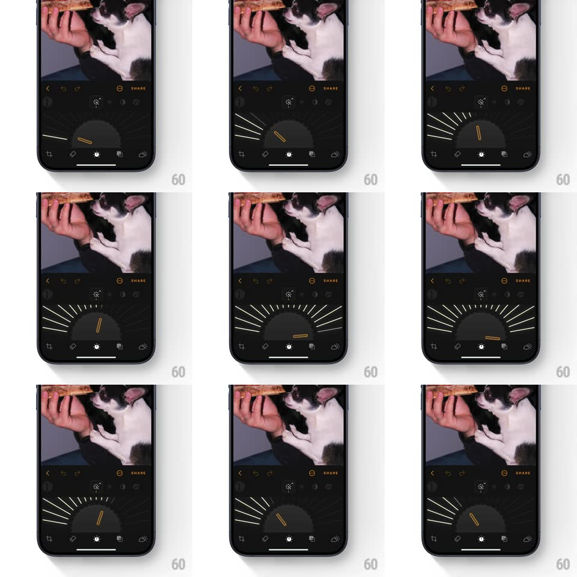

Media
Frame-by-frame

Rebuild this interaction 1:1: Luminar's Enhance AI dial - a semicircular rotary slider where radiating tick marks fan out from the dial's base; dragging rotates the indicator needle along the arc while the ticks near the needle scale up and brighten, scaling and fading with distance from the current position.

Rebuild this interaction 1:1: Luminar's Enhance AI dial - a semicircular rotary slider where radiating tick marks fan out from the dial's base; dragging rotates the indicator needle along the arc while the ticks near the needle scale up and brighten, scaling and fading with distance from the current position. ## Integration Integration: stack-agnostic spec - springs given as stiffness/damping, timed motions as duration + curve; map every value to your framework and animation library of choice. ## Scene Dark photo editor with the cat photo above; the control is a half-dial: a fan of thin white tick marks arranged in a ~180deg arc, a short amber needle indicating the value, the tool icon centered above. ## Motion spec Pattern: rotary dial with reactive tick fan. - Drag horizontally (or along the arc): the needle sweeps the semicircle (mapped -80deg..+80deg), smooth 1:1 tracking with slight smoothing (critically damped follow, ~150ms lag). - Ticks respond to the needle: the nearest ticks lengthen (scale 1 -> 1.6) and brighten (opacity 0.25 -> 1) with a gaussian falloff across ~5 ticks on each side - a moving highlight wave across the fan. - Passed ticks keep a dim amber tint (the "visited" trail) until the value returns below them. - Release: the needle eases to rest (spring ~360/26, 300ms) with a single soft tick haptic at each 10% boundary during the drag. - The photo enhancement renders live with the value. ## Calibration - The tick highlight wave is the delight - falloff must be smooth, no visible stepping between ticks. - The needle pivots from the dial's invisible center below the arc - true rotary geometry. ## Reduced motion Ticks stay static; only the needle moves. ## Don't miss - Ticks at the extremes are shorter than center ticks even at rest - the fan has its own envelope. - The amber needle sits above the tick layer with a soft glow.